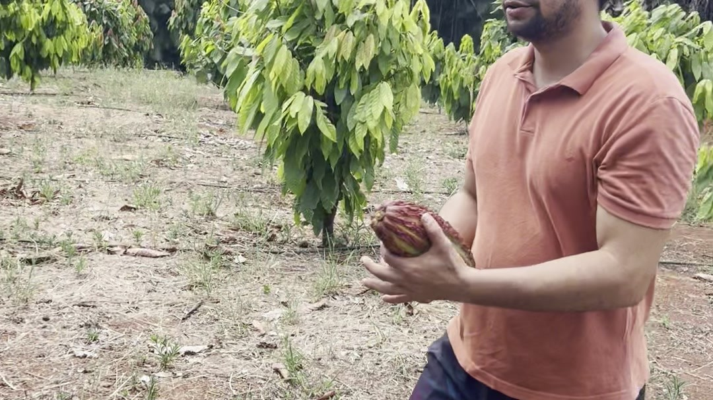
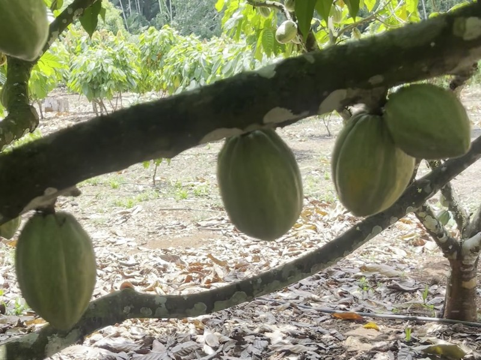
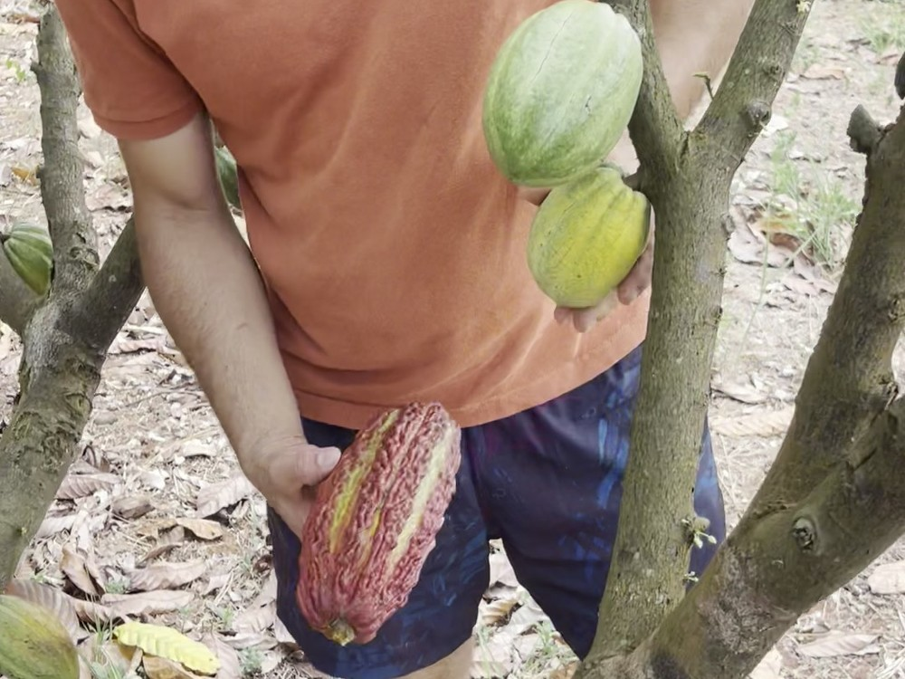
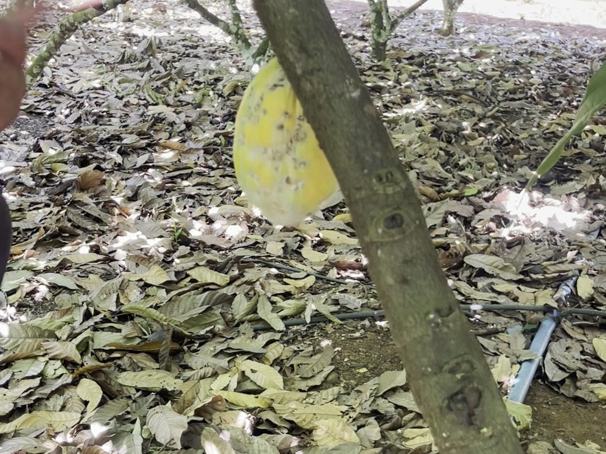
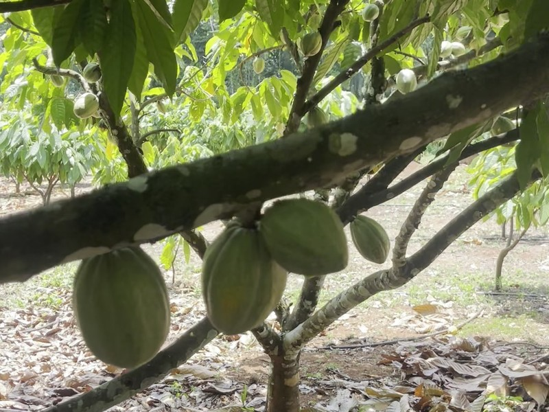

The most hated cacao in the fine-chocolate world is the tree that feeds Jedielcio’s family every month of the year.
We walked his farm in Pará with four short clips and a question. The clips run about a hundred and one seconds in total. That was enough to see the whole argument this post is going to make — because the farm holds both varieties of the cacao trade’s central argument, growing three metres apart.
The walk
Jedielcio is CEPOTX — the cooperative network that supplies our beans out of Pará, Altamira side, the organic almonds that ship to Bahia for conversion. He’s one of the people the Agroverse lane is built on, and he walks his trees the way a sailor walks a deck: naming each one, reading the season off the pods.
He pointed to one tree first. A grafted clone he calls Ponta Verde — green-tipped, smooth pods, shallow ribbing, blunt noses. “Sempre vai ter frutos… durante todo o ano,” he said. There are always fruits, all year long.

Then he gestured at the other cacao on the same ground. “Essas outras cabaças,” he called them — the common cacao. Deeply furrowed pods, eight to ten ridges, pointed tips, crimson-purple when ripe. “Um período que não tem fruto nenhum.” A stretch with no fruit at all.

Same farm. Same soil. Same rain. Two plants, two calendars, two economies.
Two phenotypes in one frame
The four clips are a field receipt, and the contrast is visible without any laboratory:
| Trait | Ponta Verde (grafted CCN-51) | Common / traditional Pará cacao |
|---|---|---|
| Pod surface | Smooth, very shallow ribbing | Deeply furrowed, 8–10 pronounced ridges |
| Pod tip | Blunt / rounded | Distinctly pointed |
| Ripe colour | Bright yellow (occasional black basal patch) | Orange-red → crimson-purple |
| Size | Large, ~15–18 cm | Slightly smaller, more elongate |
| Fruiting rhythm | Year-round — pods at every stage at any visit | Strongly seasonal — synchronous waves, fruitless period |
| Propagation | Grafted clone (enxertia de duas plantas) | Seed-planted (traditional forastero-type) |
| Farmer’s words | “Sempre vai ter frutos… durante todo o ano” | “Um período que não tem fruto nenhum” |
In one frame of the footage he holds a furrowed red-purple pod against a branch of smooth green ones. The two phenotypes, seconds apart, on the same farm. The industry has spent forty years arguing about these two plants as if they were opponents. The farmer holds them both in one hand.

The scandal of bulk cacao
CCN-51 is the poster child of everything craft chocolate claims to stand against. It was bred in Ecuador by Homero Castro — the 51st cross in his series, a three-way mix with IMC 67, ICS 95, and O-1 in the pedigree — as a crisis response to witches’ broom and mal del machete. Released publicly in 1984. Unpatented, because Castro died before filing, so it spread freely.
The genetics read as a dossier against it: roughly 1.1% Nacional, 45.4% IMC, 22.2% Criollo, 21.5% Amelonado — a forastero-dominant hybrid with a whisper of fine-flavour ancestry. The industry classifies it as bulk. It yields 700–1,100 kg/ha where Nacional gives 300–400. It starts producing about two years after planting, self-compatible, full sun, tolerates a wider disease load. It is now about 70% of Ecuadorian production and ~90% of new plantings there, and it is spreading across Latin America and Africa.
Every one of those traits is a sin in the fine-flavour ledger. High yield, fast start, disease tolerance, year-round fruiting — these are the opposite of what the craft boom romanticises. The cups judge it harshly: high bitterness, low sweetness, pronounced cocoa flavour. In one 2025 Brazilian panel it scored 14.9% for cocoa flavour and 12.4% for bitterness — among the most bitter, the least sweet, of the cultivars tested.
And yet. On the farm, the tree that the trade whispers about is the tree that never stops giving.
What the farmer’s words actually mean
“Sempre vai ter frutos.” There are always fruits. Translate that sentence from agronomy into household economics and it says: there is always income. There is always something to harvest, to ferment, to sell. The family’s cash flow does not have a dead season.
“Um período que não tem fruto nenhum.” The traditional tree has a stretch with nothing. In a good year that stretch is a pause; in a bad one it is a gap in the budget where school fees and seed money and the mechanic’s bill all live.
The fine-flavour world talks about terroir, aroma, fermentation protocols. The farmer talks about whether the tree feeds the family in the months when the other one doesn’t. Neither is wrong. They are talking about two different ledgers, and the farm runs both.
The chemistry is subtler than the labels
The research the walk turned into complicates the story in the right way. A 2025 study in Los Ríos, Ecuador, compared Nacional and CCN-51 directly — fermented beans, same conditions. Moisture, fat, caffeine, theobromine: no significant difference between the varieties alone. But the genotype × location interaction was highly significant for total polyphenols (p = 0.003) and theobromine (p = 0.009).
In plain words: the chemistry is driven by the soil and the climate meeting the genetics — terroir is not a garnish on the fine cacao story, it is the engine. The same CCN-51 that tastes harsh in one valley can behave differently in another. Nacional from Montalvo peaked at 130.51 mg GAE/g polyphenols and 1.92% theobromine — the best functional profile in that study, and a reminder that the traditional side of the ledger has real, measurable treasures.
So the honest picture is not “good cacao vs evil cacao.” It is: two plants, each carrying a different trade-off, each reading the land and the market differently. The fine side holds the aromas the craft boom pays premiums for. The bulk side holds the rhythm that keeps a family fed through the dead months.
What the farm is telling the market
Pará is Brazil’s leading cacao state, and much of its new planting is going into agroforestry systems on former pasture — SAFs, the same model the DAO’s mission of restoring 10,000 hectares of Amazon rainforest is built around. In that model, the grafted year-round tree is not the enemy of the traditional landrace. It is the economic spine that lets the farmer keep the land in trees at all.

The market that only knows CCN-51 as “bulk” misses this. The market that only knows Pará through the fine-flavour boom misses it too. The farmer who plants both is not compromising. He is hedging his family against the season, against disease, against a market that cannot make up its mind — and the hedge is what makes the agroforestry model survivable instead of romantic.
Jedielcio’s walk was a hundred and one seconds of footage. It took me most of a day of research to catch up with what the farmer already knew in his hands: the despised tree and the treasured tree are not rivals. They are two instruments in the same orchestra, and the family plays both.
The ledger both sides keep
Every bag of Agroverse cacao carries a signed record of where it came from — the cooperative, the farm, the tree. The walk with Jedielcio is the part no QR code can carry: the farmer’s own words about his own trees, in his own language, on his own land. The two ledgers run in parallel, and both are true.
The next time someone tells you CCN-51 is the villain of chocolate, ask them who eats in the months when the fine cacao has no fruit. Then go walk a farm in Pará and watch a farmer hold both pods in one hand.